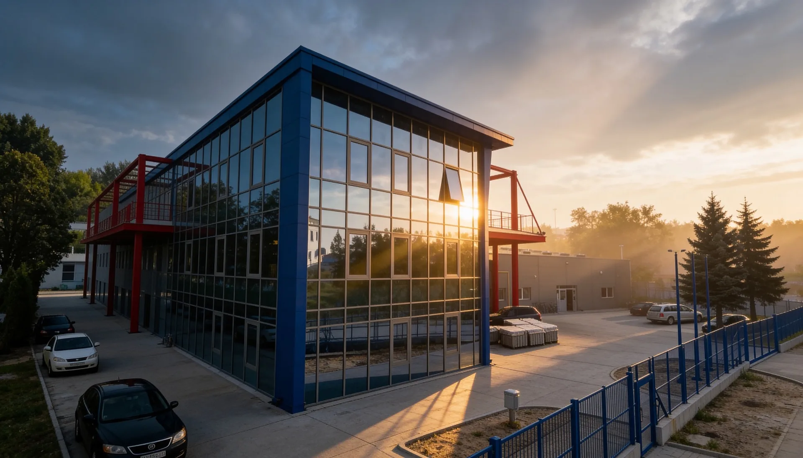

A Linardics Kft. 1994-ben alapított, 100%-ban magyar tulajdonú, családi vállalkozás. Három évtized alatt az ország egyik meghatározó precíziós lemezmegmunkálójává nőttük ki magunkat – ISO 9001 tanúsítvánnyal, TRUMPF és AMADA gépparkkal, Székesfehérváron.
Minden alkatrész ugyanolyan fontosságú. ±0,05 mm-es tűrés nem elvárás – ez a minimumunk. Gépparkunk és folyamataink ezt garantálják prototípustól nagysorozatig.
30 év alatt egyetlen nagyvállalati partnerünket sem veszítettük el minőségi hiba miatt. A határidők és ígéretek tartása számunkra alap – nem előny.
Gépparkunk, folyamataink és tudásunk folyamatosan fejlődik. Az ISO 9001 rendszer nemcsak tanúsítvány – egy folytonos fejlesztési kötelezettség, amit 2004 óta komolyan veszünk.
Kis megmunkálóból az ország egyik meghatározó lemezmegmunkáló vállalatává váltunk – fokozatosan, megbízható munkával.
Linardics Kft. megalakulása Székesfehérváron. Alapítónk, Linardics Ferenc, 2 munkással és 1 géppel kezdte a vállalkozást – a minőség iránti szenvedéllyel.
Első saját gyártócsarnok megvásárlása a Sóstói Ipari Parkban. Az alapterület megduplázódott, az első CNC megmunkálógépek üzembe helyezése.
Megszerzés és azóta folyamatosan megújított ISO 9001 minőségirányítási tanúsítvány. Ez volt a belépő a nagyvállalati beszállítói piacra.
Első TRUMPF lézervágó gép üzembe helyezése. A precíziós vágási kapacitás ugrásszerű növekedése, autóipari és gépipar beszállítói szerződések.
Saját porfestő kapacitás kiépítése. Ettől kezdve komplett, egy kézből nyújtott megmunkálási és felületkezelési szolgáltatások elérhetők.
Szomszédos üzemcsarnok megvásárlása, a gyártóterület 8500 m²-re bővül. AMADA hajlítógépek integrálása a gépparkba.
TruLaser 3030 Fiber üzembe helyezése – 5 kW-os fiber lézerforrással, amely az alacsony és közepes vastagságú anyagok vágását forradalmian felgyorsította.
Automata hajlítócella üzembe helyezése. Robot által vezérelt anyagkezeléssel a nagysorozatú hajlítás hatékonysága megsokszorozódott.
15+ gép, 8500 m² gyártóterület, 3 műszakos termelés. ISO 9001 tanúsítással, TRUMPF és AMADA gépparkkal – továbblépünk.

A vállalkozás teljes ingatlanállománya saját tulajdon. A Sóstói Ipari Parkban elhelyezkedő telephelyünk ideális lokációt biztosít: M7-es autópálya-csomóponthoz közel, kiváló logisztikai hozzáféréssel.
Minőségirányítási rendszerünk 2004 óta tanúsított. A tanúsítványt évente auditáljuk, és a folyamatos fejlesztés a rendszer alapelve.
Minden gyártási folyamat dokumentált ellenőrzési pontokkal rendelkezik. Digitális mérési protokollok, visszakövethetőség batch-szinten.